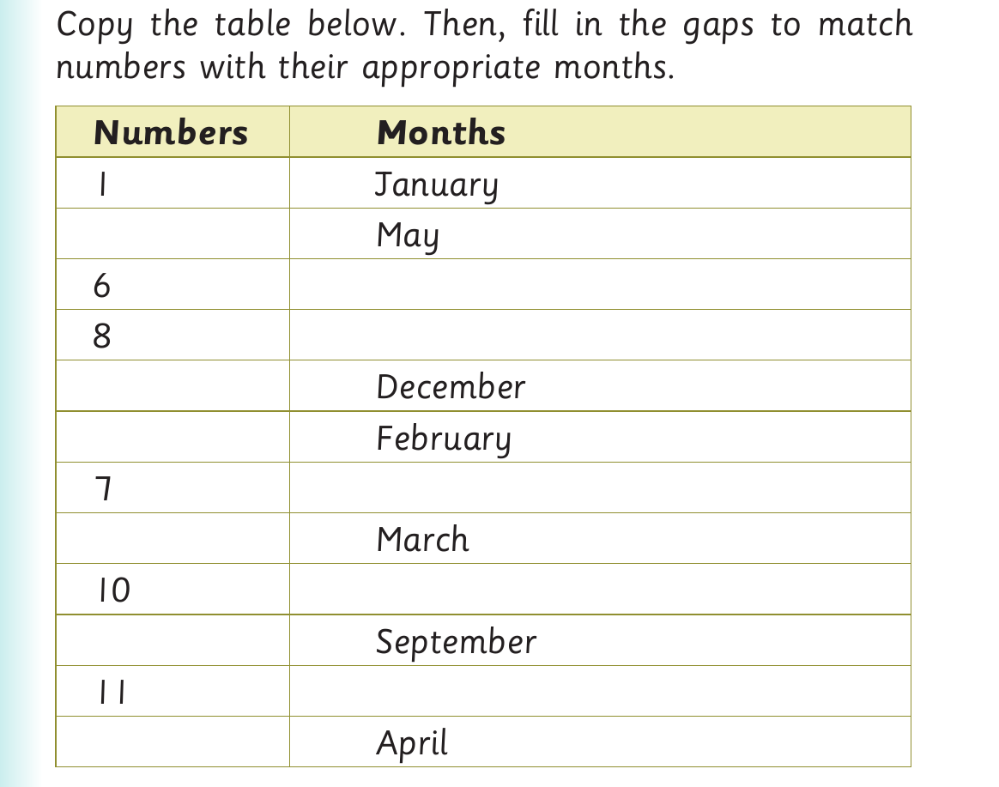

Months of the year - questions and number table
2. Respond to the following questions orally: (a) Which is the last month of the year? (b) Which month comes after March? (c) Which month is between January and March? (d) Which month comes after July? (e) Which month comes before October? (f) Which month is between October and December? (g) Which month comes before June?
Activity 2

Copy the table below. Then, fill in the gaps to match numbers with their appropriate months. Numbers Months 1 January May 6 8 December February 7 March 10 September 11 April